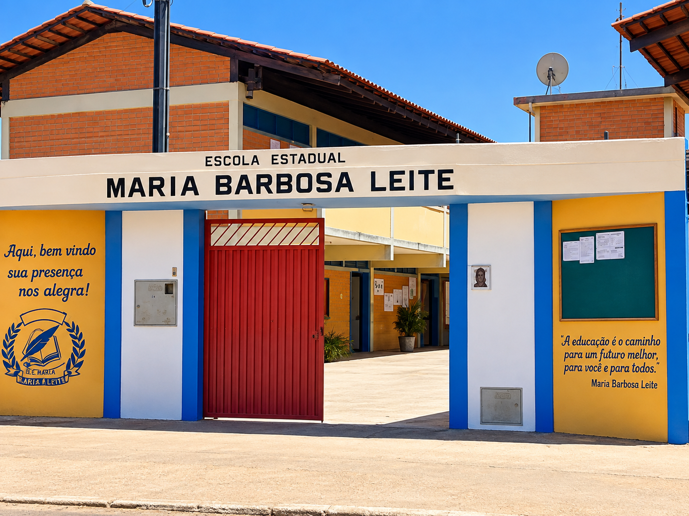

Escola Estadual Maria Barbosa Leite

Sobre a nossa escola
A Escola Estadual Maria Barbosa Leite está localizada em Ibiracatu, Minas Gerais, e faz parte da rede estadual de ensino de Minas Gerais.
A escola possui uma trajetória histórica no município. O nome Escola Estadual Maria Barbosa Leite foi adotado oficialmente em 1978, em homenagem à professora Maria Barbosa Leite.
Atualmente, a escola atende estudantes em diferentes etapas e modalidades de ensino, contribuindo para a formação educacional dos alunos e para o desenvolvimento da comunidade escolar.
Além da formação escolar, a instituição também possui iniciativas e atividades que estimulam a participação, o aprendizado e a integração entre os estudantes.
📍 Localização
Rua Henrique Ferreira. Nº100 - Ibiracatu - MG
🏫 Rede de ensino
Rede Estadual de Minas Gerais
📚 Ensino
Ensino Fundamental e Ensino Médio